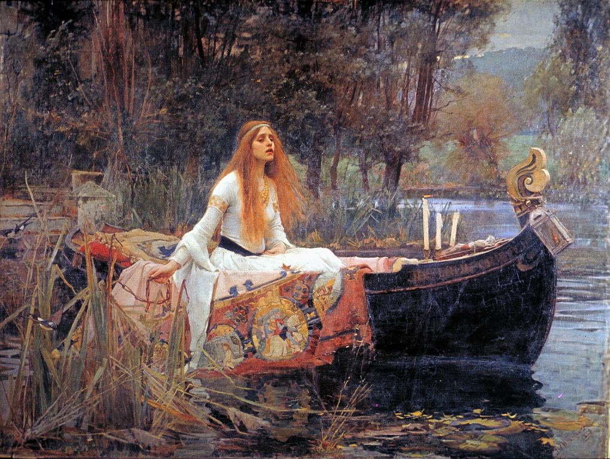

Nowoczesny prerafaelita
Royal Academy of Arts przygotowuje wielką retrospektywę prac Johna Williama Waterhouse’a (1849-1917), brytyjskiego prerafaelity i przedstawiciela neoklasycyzmu. Na wystawie zaprezentowanych zostanie ponad 40 obrazów artysty, a także jego szkicowniki i rysunki, wypożyczone m.in. z prywatnych kolekcji całego świata.
Waterhouse urodził się w roku, w którym Bractwo Pre-rafaelitów ogłosiło swą rebelię przeciwko Royal Academy. Wśród założycieli bractwa znaleźli się malarze, poeci i krytycy sztuki: Dante Gabriel Rossetti, William Michael Rossetti, James Collinson, John Everett Millais, Frederic George Stephens, Thomas Woolner oraz William Holman Hunt. Występowali przeciwko wiktoriańskiej, czysto akademickiej sztuce i głosili program sztuki odrodzonej moralnie, wzorowanej na twórczości mistrzów wczesnego włoskiego renesansu.
Początkowo malarstwa uczył Waterhouse’a jego ojciec William. Od 1870 roku studiował w londyńskiej Królewskiej Akademii Sztuk Pięknych. W 1874 roku, podczas Letniej Wystawy organizowanej przez Royal Academy, zaprezentował alegoryczny obraz „Sleep and His Half-Brother Death”, który spotkał się z entuzjastycznym przyjęciem. Od tej pory Waterhouse wystawiał tam swoje obrazy rokrocznie aż do swej śmierci w 1917 roku. W roku 1895 został członkiem Akademii Królewskiej.
{kind=link}
Najbardziej bodaj znanym obrazem artysty jest „The Lady of Shalott”. Przedstawia on bohaterkę legend arturiańskich — Elaine z Astolat, która unosząc się w łodzi umiera z żalu z powodu nieodwzajemnionej miłości do Lancelota. Motyw klątwy i tragicznej śmierci Elaine wykorzystał Alfred Tennyson w swym poemacie „The Lady of Shalott”.
J.W. Waterhouse: The Modern Pre-Raphaelite
Wystawa czynna od 27 czerwca do 13 września 2009 roku.